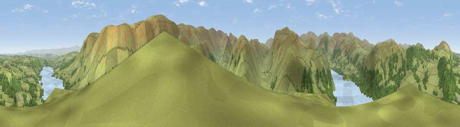

Hallin Fell
#3605 in England · top 20% of its area beats it · near WatermillockThe view, rendered

A 360° render of this exact spot computed from the terrain model, tree cover and land cover — summer colours, afternoon light, calibrated against photographs of famous viewpoints. Real trees, hedges and buildings will differ in detail.
The panorama
Grey silhouette: terrain skyline in each direction (720 bearings, Earth curvature and refraction included). Dashed green: skyline with trees (+15 m) and buildings (+8 m) as obstacles. Blue strip: how far the ground is visible on each bearing.
Where the view opens
Wedge length = distance to the farthest visible ground on that bearing (vegetation-aware). Rings at 10, 25 and 50 km.
What fills the view
58% grassland · 26% water · 15% woodland
Angular shares of the visible panorama (visual magnitude), not map area. Landscape diversity 0.42 (0–1 Shannon).
Key numbers
More beautiful places nearby
The staircase of upgrades: each row has a higher view potential than everything closer. Driving times are estimates from straight-line distance, calibrated against real road routing — check an actual route before setting out.
| Place | Direction | Drive | Score |
|---|---|---|---|
| Viewpoint near Watermillock | E · 2 km | ~5 min | 80.1 |
| Viewpoint near Watermillock | ENE · 3 km | ~7 min | 83.5 |
| Viewpoint near Legburthwaite | WSW · 10 km | ~20 min | 83.8 |
| Viewpoint near Legburthwaite | WSW · 11 km | ~21 min | 84.5 |
| Skiddaw South Top | WNW · 19 km | ~33 min | 85.8 |
| Viewpoint near Applethwaite | WNW · 20 km | ~33 min | 86.7 |
| Long Side | WNW · 20 km | ~34 min | 89.5 |
| Viewpoint near Finsthwaite | S · 32 km | ~49 min | 90.3 |
54.57063, -2.87853 · source: osm peak · position refined by local search. Computed location — check access rights before visiting.